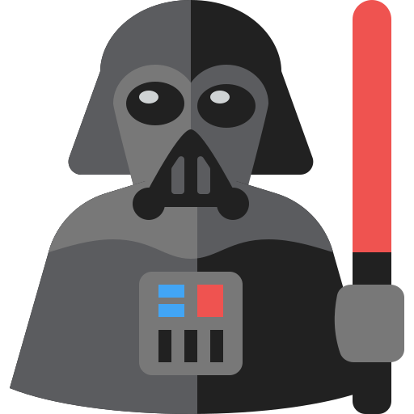

Церемония
Информация о мероприятии!
Торжество пройдёт 22 января 2022 года в банкетном зале «Amulet» по адресу ул. Восстания 35. Вход с угла дома. Время начала фуршета — 12:30. Убедительно просим гостей не опаздывать.
Ресторан арендован полностью под наше мероприятие, поэтому вход свободный. Заведение включает в себя барную зону на входе (Welcome Zone), основной и фуршетный зал с фотозоной. Все гости смогут запечатлеть момент празднования события на предусмотренный нами полароид и вклеить фотокарточку в наш альбом пожеланий.
Ресторан удивит Вас изумительными лакомствами, подготовленными к праздничному столу, сервисом европейского уровня и, конечно же, доброжелательностью и гостеприимностью.


Пять простых фактов о нас
- 
Любим Звёздные войны!
Кино показывает, что добро (светлая сторона), всегда побеждает зло (темная сторона) и что можно быть ни кем, а стать всем! А еще фильм учит, что нельзя грустить — Падме погрустила и умерла!

Обожаем итальянскую кухню
Лазанья, Спагетти (особенно Карбонара), Равиоли, Тортеллини, Ризотто, Пицца и многое другое. Итальянская кухня – это не просто еда, это целое искусство, характеризующее атмосферу этой страны, дух ее традиций и национальный колорит.

Летом изучали змеиный язык
Ну это уже магия вне Хогвартса какая-то. Однако компьютер был готов общаться именно на нем. Знания змеиного языка пригодились в создании приложений, игр и даже в работе с Джейсоном.

Знаем толк в фильмах по 150₽
В этой стези мы профи 100-го lvl-а! Зачем, как говорится, платить больше? Одна из наших традиций — ходить в кино каждый вторник на совершено любой фильм в прокате за смешные 150 рублей. Благодаря этой традиции, мы посмотрели такие фильмы, на которые никогда бы в здравом уме и не взглянули. Иногда шедевры кроются на дне.
Недавно прошли игру "It takes two"
Потрясающая игра, которая учит преодолевать трудности в команде по жизни. Как бы трудно не было, как бы вы не ссорились и не переживали, всегда нужно ставить общие цели и добиваться их вместе! Дорогу осилит идущий.